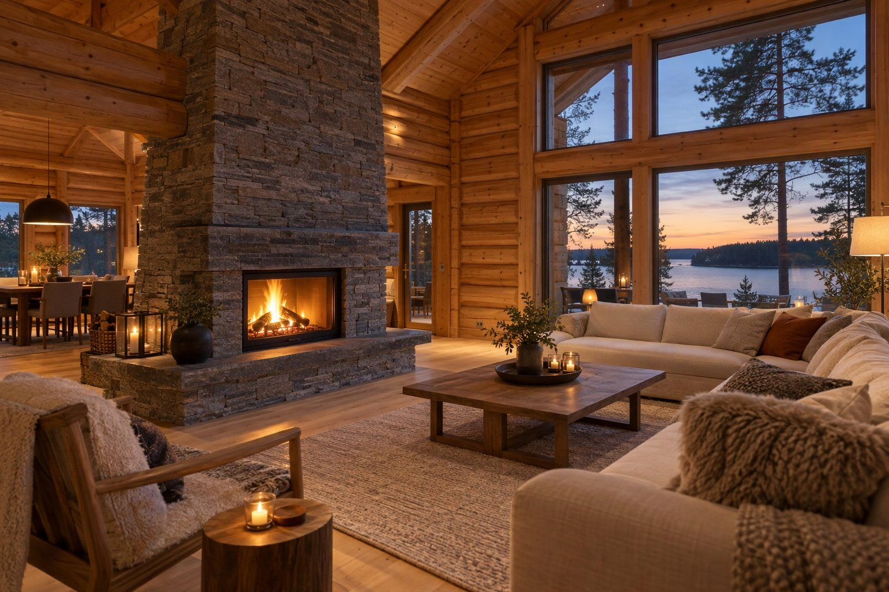

RUKA
Lammensyli
Tunturipäivät, järven rauha ja lämmin hirsimökki jopa kymmenelle.
OMA TUKIKOHTA RUKALLA
Tilaa yhdessäoloon. Rauhaa palautumiseen.
Lammensyli on hiljattain kunnostettu hirsimökki lammen rannalla, lähellä Rukan rinteitä ja latuja.
Lämmin olohuone, suuri liuskekivitakka ja hyvin varusteltu keittiö tekevät yhteisistä illoista helppoja. Parvekkeelta ja terassilta avautuvat maisemat lammelle ja tuntureille.
Katso koko varustelu
MAJOITUS
Joustavat nukkumapaikat jopa 10 vieraalle
Kaksi erillistä makuuhuonetta, tilava parvi ja olohuoneen vuodesohva sopivat perheille ja ystäväporukoille.
Aamulla tunturiin.
Illalla omaan rauhaan.
Makuuhuone 1
Parivuode kahdelle.
Makuuhuone 2
Kaksi yhden hengen vuodetta.
Parvi
Patjat viidelle, televisio ja Xbox One S.
Olohuone
Vuodesohva kahdelle; kohteen enimmäiskapasiteetti on 10 vierasta.
Perheille valmiina
Vauvansänky, syöttötuoli, lastenkirjoja, lautapelejä ja ulkoleikkivälineitä.
VARUSTELU
Kaikki hyvään Rukan lomaan
Pohjoisen parhaat puolet
Mökki on suunniteltu ympärivuotiseen lomaan – ruoanlaitosta ja palautumisesta ulkoiluun.
Oma sauna
Lempeät löylyt ulkoilupäivän päätteeksi.
Kivitakka
Suuri avotakka olohuoneen sydämessä.
Yksityinen ranta
Laituri ja soutuvene lammen rannalla.
Varusteltu keittiö
Astianpesukone, uuni, mikro, kahvinkeitin ja paljon muuta.
Nopea WiFi
Maksuton yhteys; Booking.com-arvosana 10/10.
Viihde
Taulu-TV, suoratoistopalvelut ja Xbox One S.
Ulkoiluvarusteita
Polkupyöriä, lumikenkiä, pulkkia ja kalastusvälineitä lainaan saatavuuden mukaan.
Pyykkihuolto
Pesukone, kuivausteline ja kuivauskaappi.
Lemmikit tervetulleita
Lemmikit sallitaan ilman lisämaksua.
Ilmainen pysäköinti
Paikat aivan mökin edessä ja sivulla.
Itsepalvelusisäänkirjautuminen
Helppo saapuminen avainlaatikon avulla.
Rinteet ja ladut lähellä
Skibussipysäkki ja maastohiihtoreitti lähellä.
YMPÄRI VUODEN
Kuvia Lammensylistä ja Rukalta
Hiihtoa ja lumisia metsiä talvella; soutelua, pyöräilyä ja valoisia iltoja kesällä.
VIERAIDEN KOKEMUKSIA
Sijainti, maisema ja varustelu saavat kiitosta
8,6Loistava
91 arviota Booking.comissa
91 arviota Booking.comissa
“Hyvä sijainti, kaunis paikka lammen läheisyydessä. Viihtyisä mökki, hyvät varustelut. Kiva, kun mökissä oli lasten kirjoja ja lautapelejä.”
“Kattava varustetaso. Hyvät ja muunneltavat tilat, taipui isommallekin porukalle. Hyvä sijainti. Kauniit maisemat lammelle. Soutuvene.”
“Suosittelen lämpimästi – täydellinen kaikin tavoin. Tahrattoman siisti, hyvin varusteltu, lämmin ja täydellisellä paikalla.”
Arviot on poimittu Booking.comista; Mirandan arvio on käännetty englannista. Arviotilanne tarkistettu marraskuussa 2026.
SIJAINTI
Luonto ovella, Rukan palvelut lähellä
Lammensyli sijaitsee lammen rannalla Rukalla, lähellä rinteitä ja hiihtoreittejä.
Skibussipysäkki lähellä
Kuusamon lentoasemanoin 27 km
Riisitunturin kansallispuistonoin 39 km
SEURAAVA RUKAN LOMASI
Tee Lammensylistä oma tukikohtasi
Tarkista vapaat päivät ja ajantasainen hinta Booking.comissa.
Liina- ja pyyhepaketti on saatavana hintaan 15 €/henkilö. Valinnainen loppusiivous 100 €, tai vieras voi siivota itse.